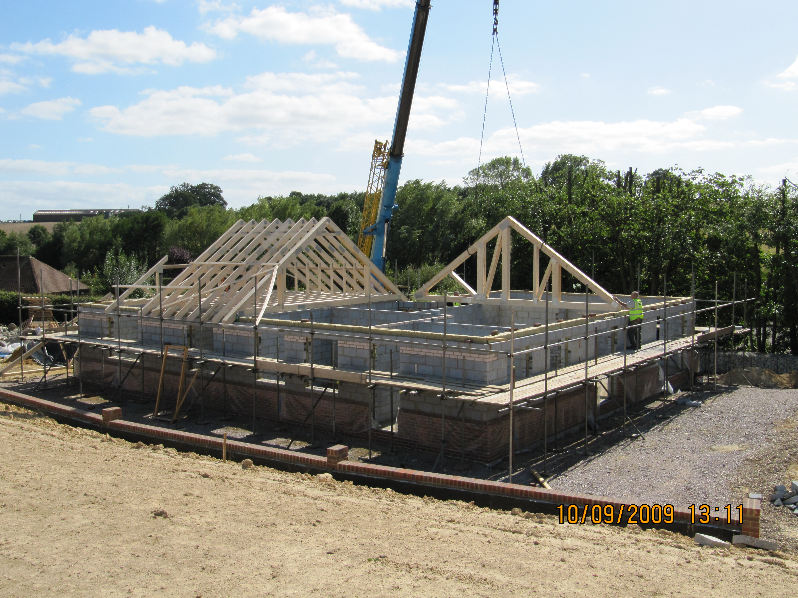
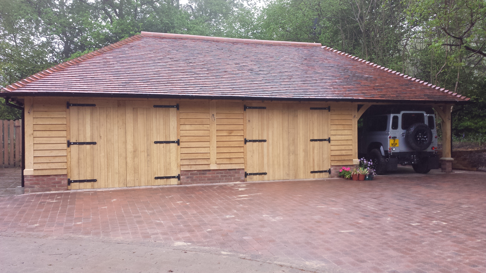
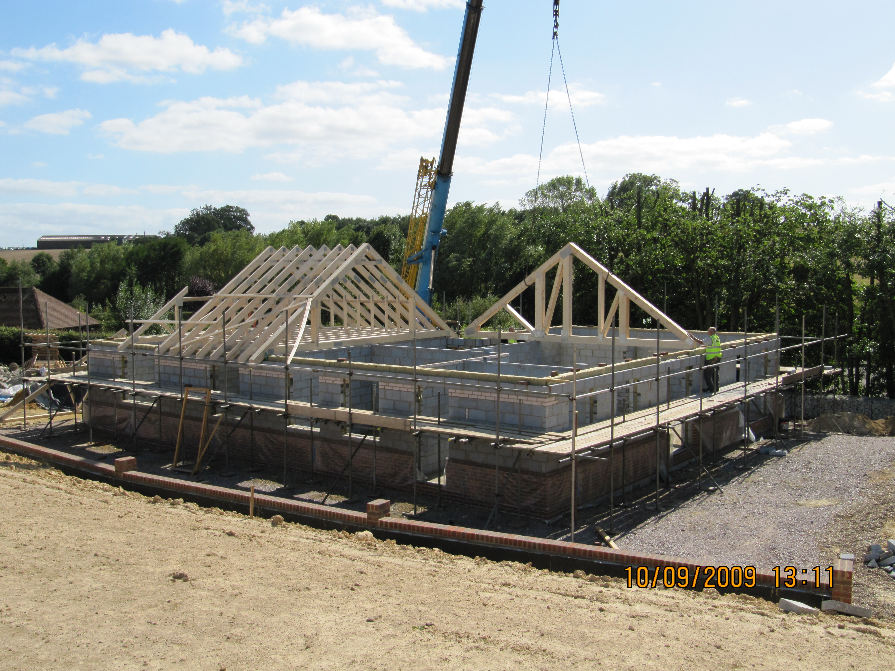
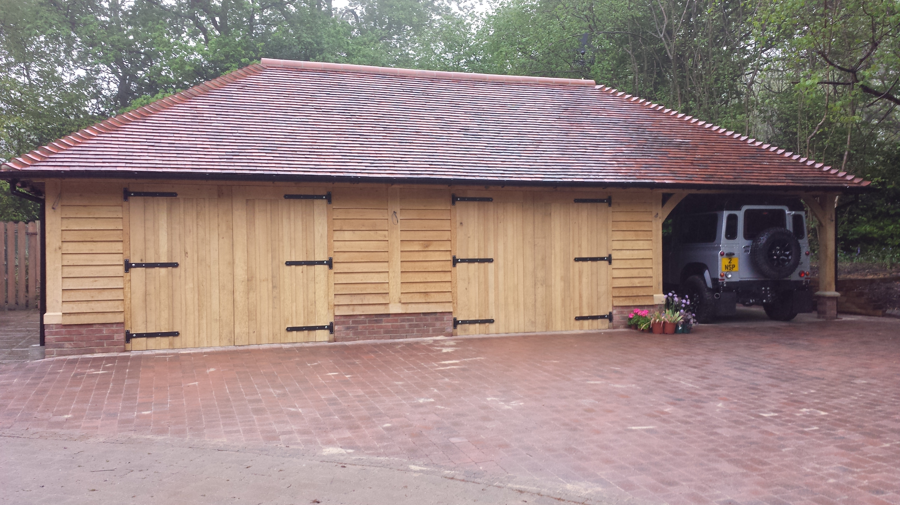

Welcome to MRW Builders.
Personal service.
Exceptional craftsmanship.
Built to last.
Based in Staplehurst, we bring over 30 years of experience to bespoke timber and oak frame buildings, conversions, extensions and other projects across Kent.
We take pride in traditional craftsmanship and meticulous attention to detail — creating spaces that blend timeless design with modern comfort.
From initial ideas to final completion, every project is handled personally, with clear communication and workmanship built to last.
Fully insured and guaranteed, with free, no-obligation estimates available on request.
What we do.
Specialists in timber & oak frame buildings
We consider all projects but our main services include:
- Extensions & Conversions
- Renovations & Refurbishments
- Bespoke Timber & Oak Frame Buildings
- Fibre-glass Roofing
- Patios, Driveways & Landscaping
- Swimming Pools & Ponds
- Sewage Treatment Plant Installation
- General Carpentry & Joinery
Get in touch.
Please reach out if you would like a to discuss a project or get a free, no obligation quotation for any building work.
Phone:
Email:
Where we work.
Based in
Staplehurst, Kent
The map below shows our normal operating area. We are happy to discuss projects outside of this area.